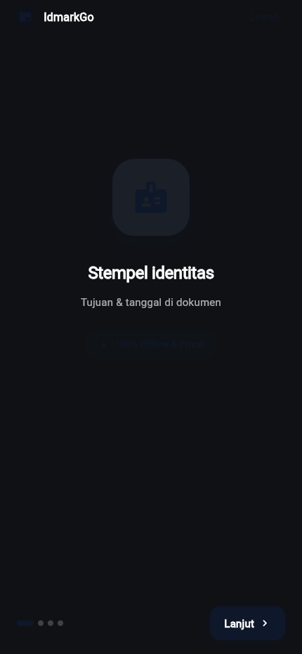
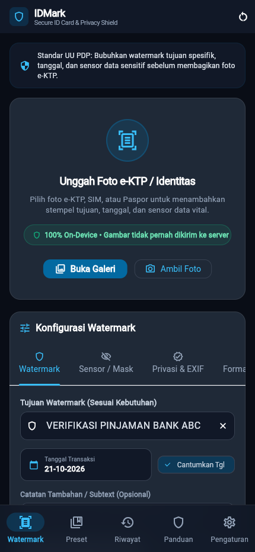
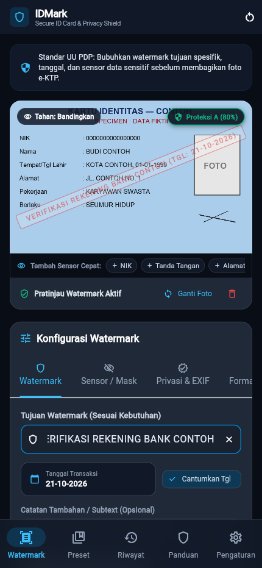
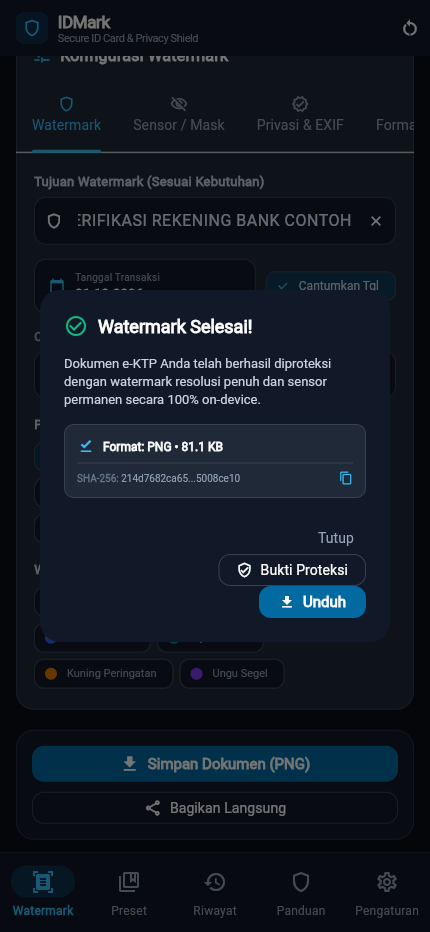

BAST idmark · BAST-FLOW-WMK-01
Membubuhkan cap tujuan dan tanggal lalu menyimpan dokumen
FLOW-WMK-01ROL-001MOD-001EP-001US-001US-002US-007FR-001FR-002FR-005NFR-001NFR-003
Pengguna membuka IDMark pertama kali, memilih foto kartu identitas, menulis tujuan verifikasi, lalu menyimpan dokumen ber-watermark resolusi penuh. Semua diproses di perangkat; foto tidak pernah diunggah.
Langkah 1: Buka IDMark
Saat pertama dibuka, IDMark menampilkan layar perkenalan. Ketuk Lewati untuk langsung ke editor.

Langkah 2: Masuk ke editor Watermark
Tab Watermark menampilkan kotak Unggah Foto e-KTP / Identitas dan panel konfigurasi cap.

Langkah 3: Pilih foto identitas
Ketuk Buka Galeri lalu pilih foto kartu identitas. Pratinjau langsung menampilkan cap merah melintang.

Langkah 4: Tulis tujuan verifikasi
Isi Tujuan Watermark dengan instansi dan keperluan spesifik, misalnya VERIFIKASI REKENING BANK CONTOH. Tanggal transaksi otomatis tercantum.

Langkah 5: Simpan dokumen
Ketuk Simpan Dokumen (PNG). Dokumen dirender di perangkat dengan resolusi asli dan dialog Watermark Selesai! muncul.

Hasil uji
| TC | Jenis | Lapis | Skenario | Hasil |
|---|---|---|---|---|
FLOW-WMK-01-T01 | positive | unit | cap tujuan + tanggal dirender di perangkat dengan resolusi asli tetap utuh | pass |
FLOW-WMK-01-T02 | negative | unit | validatePurpose rejects empty and invalid length | pass |
FLOW-WMK-01-T03 | edge | unit | tujuan tepat 3 dan 80 karakter diterima, 81 karakter ditolak | pass |
FLOW-WMK-01-T04 | corner | unit | tanggal cap mengikuti zona pilihan: instan yang sama bisa beda tanggal di Jakarta dan New York | pass |
FLOW-WMK-01-T05 | corner | unit | IdMarkApp smoke test: setelah onboarding, splash langsung ke editor tanpa galat | pass |
FLOW-WMK-01-T06 | edge | unit | kolom Tujuan Watermark punya label aksesibilitas sebagai kolom teks | pass |
FLOW-WMK-01-T07 | edge | unit | tema gelap: semua teks di layar Watermark (editor) kontras >= 4.5 | pass |
FLOW-WMK-01-T08 | edge | unit | tema terang: semua teks di layar Watermark (editor) kontras >= 4.5 | pass |
Direkam terhadap flutter build web (lokal) oleh FLOW-WMK-01-T01.